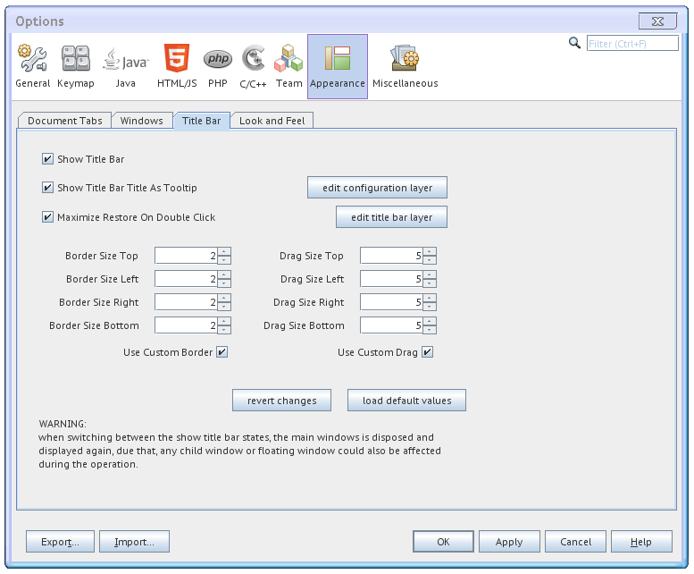
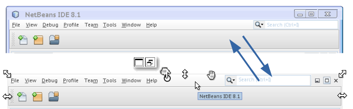
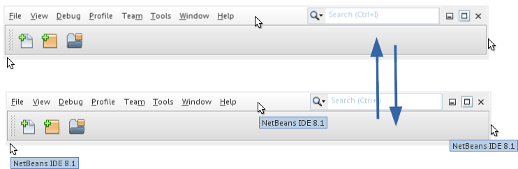
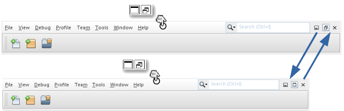
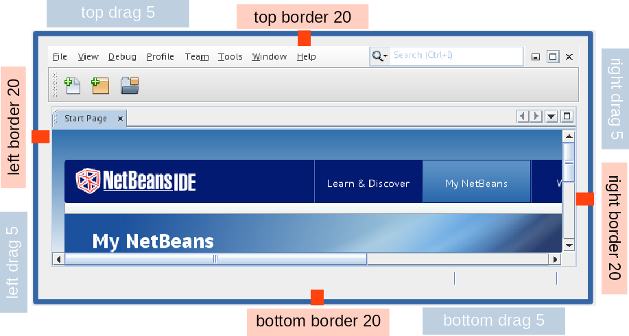

Title Bar Options Panel
options
panel accesible throw the menu Tools > Options >
Appearance > Title Bar.

Show Title Bar
switch between showing and hiding the main window's title bar.

Show Title Bar Title
As Tooltip
configure if a tooltip showing the main window's title is displayed
when the main window's title bar is hidden and the mouse is over
the main window's menu bar or borders.

Maximize Restore On
Double Click
configure if the main window's maximize and restore states are
switched when the title bar is hidden and a double click event
occours over the main window's menu bar or borders.

Edit Configuration Layer
edit the configuration layer, which is always enabled.
Edit Title Bar Layer
edit the title bar layer, which is enabled when the title bar is hidden.
Border Size
configure the margin between the main window's bounds and the main
window's root pane.
sometimes this custom border is needed to make enough space to the
drag area, in order to catch the mouse events of the custom drag
handler. also it can be useful to configure the border layout when
the title bar is hidden.
Drag Size
configure the area where the mouse events are caught by the custom
mover handler and the custom sizer handler.
This image shows a main window configured with a border size of 20
and a drag size of 5.

Use Custom Border
configure if the custom border is used when the title bar is
hidden.
Use Custom Drag
configure is the custom drag and the custom move is enabled when
the title bar is hidden.
revert changes
revert the changes done in the options panel.
load default values
load the default values into the options panel.
WARNING
when switching between the show title bar states, the main
windows is disposed and displayed again, due that, any child window
or floating window could also be affected during the operation.